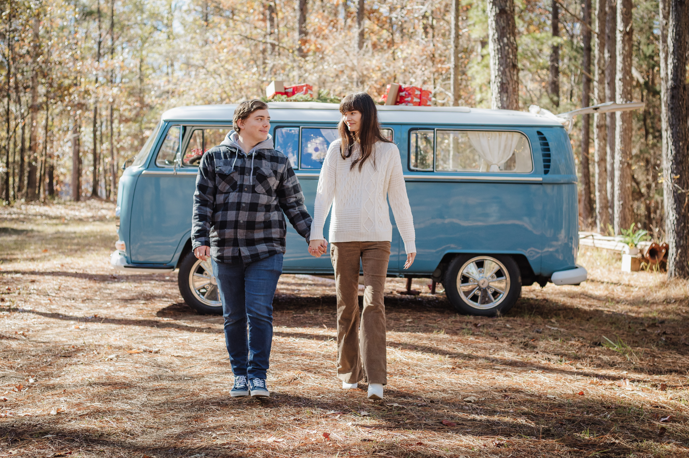

About Me
Hey, I’m Hannah!
I'm 21 years old and I've recently moved from Mississippi to Oregon with my fiance and our four (yes, 4) cats. We drove across the country and I loved getting to see the desert for the first time. We passed through Area 51, the famous Clown Motel, Las Vegas, and so many other cool places.
I have an Associate's degree in Business Administration and I'm a senior online at the University of Southern Mississippi. I am getting my Bachelor's degree in Library and Information Science with the goal of becoming a public librarian.
I've loved TV since I was just a kid and streaming just made me want to watch even more. I fell in love with a show called The Vampire Diaries in middle school and I've watched all 8 seasons more times than I can even remember. Some books that sparked my love for reading were: Goosebumps, My Life with the Walter Boys, The Selection, and Twilight. I discovered my love for coffee when visiting a coffee shop out of town. Living in such a small town, I decided to start making my own at home so I didn't have to go out of town for a coffee and it ended up becoming a hobby of mine.
TLDR; I started this little digital library to share my interests with others. I hope you enjoy it as much as I do. :)
